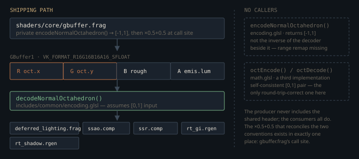

Monograph · Tree · ← Sitemap · Common includes
shaders
Common includes
math, color, encoding, reconstruction, constants.
Six headers, one preprocessor, no module system
`glslc` has no modules. `GL_GOOGLE_include_directive` splices text, and OHAO's shader build hands the compiler two search roots — the `shaders/` tree and `shaders/includes/` — so one header can be reached under more than one spelling and more than once per translation unit.
COMMAND ${GLSLC} --target-env=vulkan1.3 -I${CMAKE_CURRENT_SOURCE_DIR} -I${CMAKE_CURRENT_SOURCE_DIR}/includes ${SHADER} -o ${SPIRV}shaders/CMakeLists.txt:47That is why every file here opens with an `#ifndef OHAO_..._GLSL` guard. No shader in the tree currently reaches the same header twice, so today the guards fire for nobody — but the graph is one include away from needing them: `math.glsl` is pulled in by both `brdf_common.glsl` and `light_attenuation.glsl`, so a shader that took the BRDF and the attenuation header together would reach it twice, and without the guard `saturate` would be redefined and the shader would fail to compile.
`includes/common/` holds no constant the C++ side also needs. Those live in `shaders/shared/layout.json` and reach GLSL through the generated `shared/layout.glsl`, guarded the same way, which `deferred_lighting.frag` includes right after its two `includes/` headers:
#include "shared/layout.glsl"shaders/core/deferred_lighting.frag:10The absence of a module system has a second consequence that shapes everything below: nothing *obliges* a shader to use these headers. `common.glsl` declares itself the bootstrap every shader should include first. No shader includes it.
// This file should be included first in all shaders to establishshaders/includes/common/common.glsl:7The transitive chain deferred lighting depends on without naming
`constants.glsl` looks like a bag of macros nobody needs. It has exactly one live consumer, three includes down. `brdf_ggx.glsl` — the BRDF `deferred_lighting.frag` calls — spends `EPSILON` at six sites. Three are genuine division guards, `max(denom, EPSILON)` in the GGX distribution, in the Schlick-GGX geometry term and in the height-correlated Smith visibility:
return a2 / max(denom, EPSILON);shaders/includes/brdf/brdf_ggx.glsl:38The other three are `max(dot(N, V), EPSILON)` lower bounds on a cosine. Nothing is divided there; they only keep a grazing `NdotV` or `NdotL` off exact zero before it is fed to the three that are.
`brdf_ggx.glsl` never includes `constants.glsl`. It includes `brdf_common.glsl`, one hop away, which includes `math.glsl` — for `saturate` and `INV_PI`, both of which it genuinely uses — and `math.glsl` includes `constants.glsl`, annotating the line with the reason.
#include "includes/common/math.glsl"shaders/includes/brdf/brdf_common.glsl:12Every link on that chain is declared, then, except the last consumer: `brdf_ggx.glsl` reads `EPSILON`, `PI` and `INV_PI` while naming no file that defines any of them. Dropping `math.glsl` from `brdf_common.glsl` because "it only uses saturate, let's inline it" is a hard compile error, and it fires at the edit site first — `saturate` in both Fresnel functions, `INV_PI` in both diffuse lobes — before the cascade reaches `brdf_ggx.glsl` at all. An undefined macro in GLSL stays an identifier rather than becoming zero, so there is no `inf` to observe: the build simply stops.
The light struct is not here
No header in `includes/common/` declares a light. The raster light record the deferred lighting pass and the clustering kernel read is `LightGpu`, four `vec4`s, declared once in `shaders/shared/layout.json` and generated into GLSL, Slang and C++ by `tools/gen_layout.py`:
struct LightGpu {shaders/shared/layout.glsl:286The C++ copy asserts every field's offset and the 64-byte size, and the three copies come from one description, so the GLSL side of the boundary is checked too: editing `layout.glsl` by hand makes `gen_layout.py --check` fail, and editing the JSON without regenerating does the same.
static_assert(offsetof(LightGpu, params) == 48);ohao/gpu/shared_layout.hpp:367`constants.glsl` still carries three light-type macros, `LIGHT_TYPE_DIRECTIONAL` 0, `LIGHT_TYPE_POINT` 1 and `LIGHT_TYPE_SPOT` 2, matching the raster codes in `LightGpu.position.w`. The lighting shader compares bare integers and uses none of them.
#define LIGHT_TYPE_DIRECTIONAL 0shaders/includes/common/constants.glsl:19Octahedral normals: three encoders, two decoders, one of each ships
A unit normal has two degrees of freedom but three components. Octahedral mapping trades a little angular precision for a channel: project the normal onto the L1 unit ball,
which is a bijection from the upper hemisphere onto the square $|p_x|+|p_y|\le 1$. The lower hemisphere ($n_z < 0$) is folded outward into the four corner triangles,
where $\odot$ is componentwise multiply and $\operatorname{sign}$ maps zero to $+1$. The result covers $[-1,1]^2$; storing it in an unsigned target needs one more step, $p \mapsto 0.5p + 0.5$.
That last step is where OHAO's version gets interesting. The shared decoder undoes the remap on entry, so it expects $[0,1]$:
vec2 f = encoded * 2.0 - 1.0;shaders/includes/common/encoding.glsl:16The shared *encoder* sitting immediately below it does not apply the forward remap — it returns $[-1,1]$ — so the two functions in the same file are not inverses. They never have to be, because the shared encoder has no callers at all. The GBuffer pass carries its own private copy of the projection and applies the range remap itself, at the call site:
vec2 encodedNormal = encodeNormalOctahedron(N) * 0.5 + 0.5;shaders/includes/scene/gbuffer_body.glsl:198`math.glsl` then supplies a *third* implementation, `octEncode`/`octDecode`, which is the only self-consistent $[0,1]$ pair in the tree and has zero callers.
vec2 octEncode(vec3 n) {shaders/includes/common/math.glsl:177
The header comment justifies the packing by the GBuffer format, naming `A2R10G10B10`. The attachment is actually `VK_FORMAT_R16G16B16A16_SFLOAT` {{cite ohao/render/deferred/gbuffer_pass.cpp "VK_FORMAT_R16G16B16A16_SFLOAT, // octahedral normal + roughness + emissive / -subsurface"}} so the precision argument for octahedral encoding does not apply — fp16 would hold a raw xyz normal comfortably. What the packing still buys is the *channel*: two components for the normal leaves `.b` for roughness and `.a` for emissive luminance in the same attachment. The rejected alternative — three components of raw normal — costs a fifth MRT attachment and its bandwidth on every GBuffer write. The comment is stale about the reason; the decision is still right for a different reason.
What the math and color headers actually deliver
`math.glsl` exports eighteen helpers. One of them reaches live code: `saturate`, at the two Fresnel call sites in `brdf_common.glsl` (its other eight call sites sit in `light_attenuation.glsl`, which no shader includes). The other seventeen have no live caller. Thirteen have no caller at all — `remap`, `remapClamped`, `linearstep`, `fastAtan2`, `lengthSquared`, `safeNormalize`, `reject`, `getRotationMatrix`, `smoothHermite`, `smootherHermite`, `gain`, `packNormal`, `unpackNormal` — and so do `octEncode` and `octDecode` above. The last two, `project` and `bias`, are called only from inside this same file, by the already-dead `reject` and `gain`. Nothing is shadowed by an inlined copy either: the only `safeNormalize` in the engine is an unrelated C++ function in the physics module.
`color.glsl` is in the same position wholesale: no shader includes it. Its `luminance` and `tonemapACES` have live counterparts, but they are private copies — `tonemapping.frag` defines its own ACES fit rather than including this one.
float luminance(vec3 color) {shaders/includes/common/color.glsl:80vec3 ACESFilm(vec3 x) {shaders/postprocess/tonemapping.frag:21Reconstruction and depth linearization: one live overload
`reconstruction.glsl` has no live entry point left and no includer. Its last caller was the GLSL SSAO shader, which called the `mat4` overload of `reconstructViewPos` twice; the Slang SSAO that replaced it reads world positions from the G-buffer instead. The compact overload that takes `(1/proj[0][0], 1/proj[1][1], near, far)` to save 48 bytes of push constants never had a caller, nor did `reconstructWorldPos` and `reconstructWorldDir`. The header's usage comments name consumers — `volumetric_scatter`, `cloud.comp`, `water.frag` — that do not exist anywhere in `shaders/`.
// Used by: cloud.comp, water.frag (ray origin/direction from screen pixel)shaders/includes/common/reconstruction.glsl:49Both depth linearizers in `encoding.glsl` are in the same position: their comments name `ssgi`, `volumetric_scatter` and `dof_coc`, none of which is in the tree, and nothing calls either function. They are not entirely unchecked: the whole of `encoding.glsl` is spliced into `deferred_lighting.frag`, its one remaining includer, so its uncalled functions are still parsed on every shader build — they simply never reach a call site. `reconstruction.glsl` is not even parsed: the shader glob compiles only stage files, and no stage file includes it.
// Used by: ssgi, volumetric_scattershaders/includes/common/encoding.glsl:39There is no shared noise or hash header at all. The shaders that need pseudo-randomness each roll their own: `pt_anyhit.rahit` an integer bit-mixer (PCG), `sky.frag` and `dlss_tonemap.comp` float-valued hashes of the familiar `fract`-of-products shape.
uint pcg(uint v) {shaders/rt/pt_anyhit.rahit:33p = fract(p * vec2(123.34, 456.21));shaders/postprocess/sky.frag:38Contracts
- `gbuffer.frag`'s private encoder returns $[-1,1]$ and the `×0.5+0.5` remap lives at its call site; `decodeNormalOctahedron` assumes $[0,1]$. Change either half alone and every consumer's lower-hemisphere normals flip.
- The raster light record is `LightGpu` in `shaders/shared/layout.json`; a field changes there and is regenerated, never edited in `layout.glsl`, `layout.slang` or `shared_layout.hpp`.
- `brdf_ggx.glsl` gets `EPSILON` transitively through `brdf_common.glsl` → `math.glsl` → `constants.glsl` and declares none of it. That chain is required by the deferred lighting pass.
- `constants.glsl`'s header says its values must match the C++ engine and points at `src/renderer/offscreen/offscreen_types.hpp`, a path that is not in the tree; nothing checks any of them.
// See: src/renderer/offscreen/offscreen_types.hppshaders/includes/common/constants.glsl:8Source files
shaders/CMakeLists.txtshaders/core/deferred_lighting.fragshaders/includes/common/common.glslshaders/includes/brdf/brdf_ggx.glslshaders/includes/brdf/brdf_common.glslshaders/shared/layout.glslohao/gpu/shared_layout.hppshaders/includes/common/constants.glslshaders/includes/common/encoding.glslshaders/includes/scene/gbuffer_body.glslshaders/includes/common/math.glslshaders/includes/common/color.glslshaders/postprocess/tonemapping.fragshaders/includes/common/reconstruction.glslshaders/rt/pt_anyhit.rahitshaders/postprocess/sky.fragParent hub for the full pipeline narrative; this page is the file-level design unit. Sitemap · hover glossary terms anywhere.